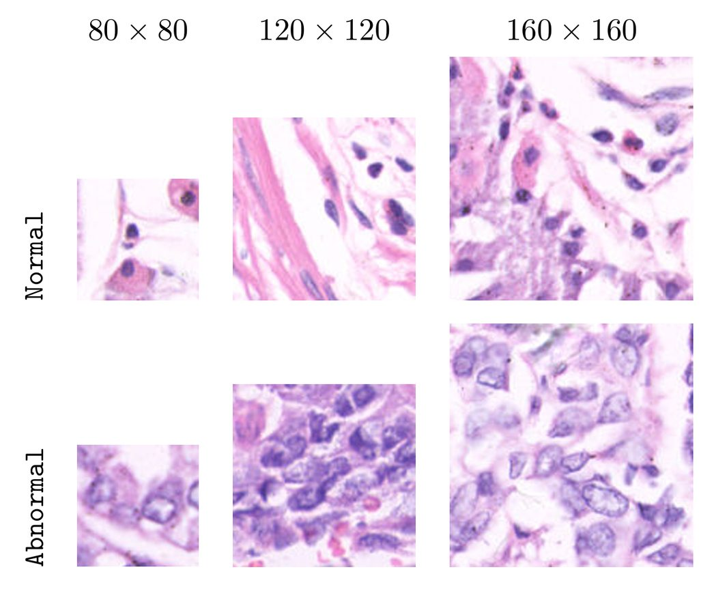
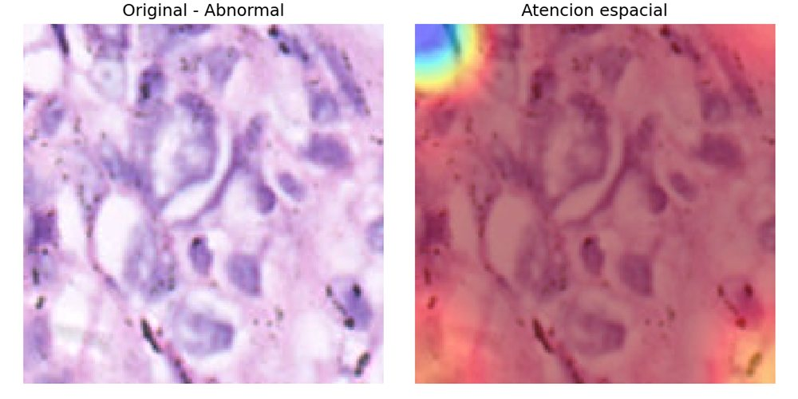
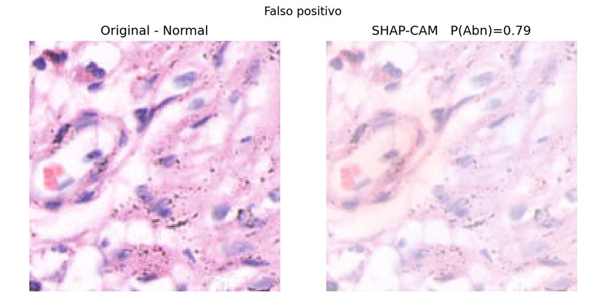

Detección de cáncer gástrico en imágenes histopatológicas
¿Puede un modelo distinguir tejido gástrico normal de anormal en parches de microscopía? Construyo un sistema reproducible sobre GasHisSDB, mido cuánto aportan el aumento de datos y un módulo de atención CBAM, y analizo con honestidad dónde falla y qué no se puede concluir.
Memoria (PDF)Resumen (PDF)Código
- Datos
- 245.196 parches · 3 tamaños
- Mejor accuracy
- 94,70 % · CBAM, 160 px
- AUC-ROC
- 0,988 · CBAM, 160 px
- Protocolo
- 5 semillas · CV estratificada de 5 pliegues
El problema
El diagnóstico histopatológico depende de que un patólogo revise láminas teñidas al microscopio. Es un trabajo lento y no siempre se llega a la misma conclusión diagnóstica, sobre todo cuando la muestra es ambigua.
GasHisSDB divide láminas de tejido gástrico teñidas con hematoxilina-eosina en parches pequeños etiquetados como Normal o Anormal. Trato cada tamaño de parche como una colección independiente y planteo una clasificación binaria por parche.

Los datos
Antes de entrenar nada, revisé el conjunto de datos a fondo. Esto fue lo que encontré:
- Clases desbalanceadas (≈ 60 % Normal / 40 % Anormal en los tres tamaños). Lo compenso con pesos de clase inversos a la frecuencia, sin descartar imágenes.
- Detecté 160 parches en grupos de duplicados exactos, muchos sin tejido visible.
- Los identificadores no permiten saber de qué paciente o lámina sale cada parche, así que no se puede hacer una partición por paciente.
- Normalización con estadísticas propias de cada colección (media y desviación por canal).
El enfoque
Una red convolucional preentrenada actúa como extractor de características y un modelo de gradient boosting decide la clase. Sobre esta referencia comparo dos mejoras.
- Parche80 · 120 · 160 px
- Redimensionado y normalización224 px · RGB
- EfficientNetV2-B0preentrenado y congelado
- + CBAMatención de canal y espacial
- Global average poolingvector de características
- CatBoostcon pesos de clase
- Normal / Anormal
Tres configuraciones
- Referencia: EfficientNetV2-B0 congelado + CatBoost.
- Aumento de datos: orientaciones adicionales (transformaciones geométricas) solo durante el ajuste del clasificador.
- CBAM: un módulo de atención de canal y espacial entrenado sobre el extractor congelado, antes de CatBoost.
Un protocolo que no depende de la suerte
Separo un 20 % estratificado para la prueba final. En el 80 % restante, una validación cruzada estratificada de 5 pliegues elige los hiperparámetros de CatBoost entre 27 combinaciones según la balanced accuracy. Repito todo con 5 semillas y reporto la media, además de un intervalo de confianza bootstrap al 95 %.
Resultados
Gráfico de puntos: CBAM obtiene el mejor resultado en los tres tamaños de parche; el rendimiento crece con el tamaño.
Ver tabla de datos
| px | Referencia | Aumento de datos | CBAM |
|---|
- CBAM es la mejor configuración en los tres tamaños y supera a la referencia en las 5 semillas: +2,16 pp a 80 px, +1,22 a 120 px y +1,46 a 160 px.
- El aumento de datos mejora de forma consistente (+1,13, +0,95 y +1,14 pp) sin añadir ningún módulo entrenable.
- El tamaño del parche pesa más que cualquier mejora: la referencia gana 3,60 pp de 80 a 160 px. Ese efecto no se puede separar de la cantidad y composición de cada colección.
- Intervalo de confianza al 95 % de CBAM a 160 px: 94,22 – 95,25 % (semilla 42).
Sensibilidad 93,9 % · especificidad 95,3 %. Hay algo más de falsos positivos (191) que de falsos negativos (160).
Filas: tamaño de entrenamiento · columnas: tamaño de evaluación · recuadro: mismo tamaño
La transferencia entre tamaños es asimétrica: entrenar con parches pequeños generaliza mejor hacia los grandes (80 → 160 px conserva un 85,28 %) que al revés (160 → 80 px cae al 67,38 %).
¿En qué se fija el modelo?
Usé dos herramientas: los mapas de atención espacial de CBAM y SHAP sobre las predicciones de CatBoost, proyectado sobre la imagen (SHAP-CAM). Para no quedarme con ejemplos bonitos, estratifiqué la muestra de 160 px en cuatro grupos del conjunto de prueba: 5.900 aciertos con alta confianza, 114 aciertos con baja confianza, 191 falsos positivos y 160 falsos negativos.


La conclusión honesta es que estas herramientas sirven para explorar el comportamiento del modelo, no para validarlo. La atención apenas diferencia zonas y los mapas no demuestran que el modelo localice estructuras tumorales. Confirmar su relevancia histológica requeriría la revisión de un especialista.
Limitaciones y siguientes pasos
Lo que limita los resultados
- Sin identificadores de procedencia, parches de una misma lámina pueden caer en entrenamiento y prueba: las métricas pueden ser optimistas.
- Las estadísticas de normalización se estimaron antes de particionar.
- CBAM se entrena antes de la validación cruzada de CatBoost, así que esa validación no cubre todo el aprendizaje de la variante.
Siguientes pasos
- Un conjunto que permita agrupar parches por imagen de origen y particionar sin fugas.
- Ajuste fino del extractor en lugar de mantenerlo congelado.
- Validar los mapas de interpretabilidad con patólogos.
Todo el experimento es reproducible: entorno en Docker con dependencias fijadas y resultados por semilla guardados en JSON.
Python · PyTorch · timm · CatBoost · scikit-learn · SHAP · OpenCV · Docker